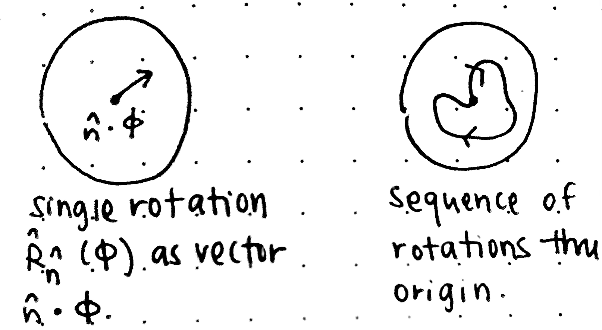
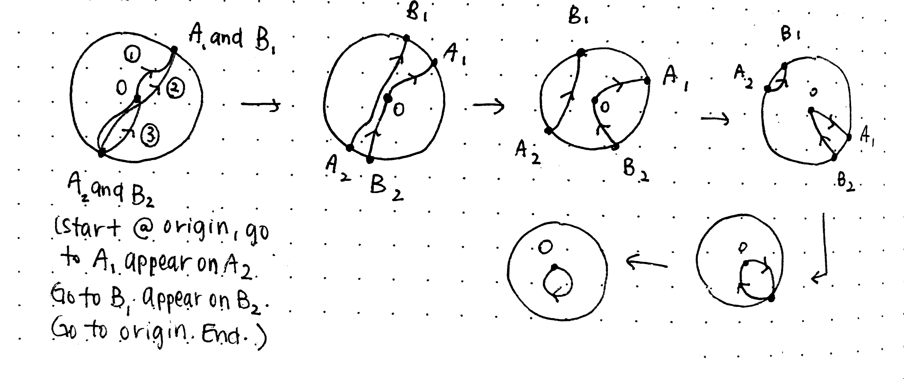

Angular Momentum Theory
This section begins with a recap of last semester's final unit on angular momentum, then discusses rotations in a bit more depth.Angular Momentum
In classical mechanics, rotations are canonical transformations; in quantum mechanics, rotations are unitary transformations. A rotation is described as \(\hat R_{\hat n}(\phi)\), where \(\hat n\) is the axis around which the rotation occurs, and \(\phi\) is the angle of rotation.Rotations have the following properties:
- Rotations can be combined: \(\hat R_{\hat n}(\phi_1) + \hat R_{\hat n}(\phi_2) = \hat R_{\hat n}(\phi_1 + \phi_2)\)
- Rotations are unitary: \(\hat R_{\hat n}^\dagger(\phi) = \hat R_{\hat n}^{-1}(\phi)\)
- Each rotation has an opposite: \(\hat R_{\hat n}(\phi) \hat R_{\hat n}(-\phi) = \hat R_{\hat n}(-\phi) \hat R_{\hat n}(\phi) = \hat 1\)
- Also, \(\hat R_{\hat n}(-\phi) = \hat R_{\hat n}^{-1}(\phi) = \hat R_{\hat n}^\dagger(\phi)\)
- A rotation of \(\phi=0\) is the identity: \(\hat R_{\hat n}(0) = \hat 1\)
\(\hat {\vec J}\) has the following algebraic properties:
- For a vector operator \(\hat{\vec A} = \sum_i \hat x_i \hat A_i\) (where \(\hat x_i\) is a unit vector, not an operator!), \([\hat J_i, \hat A_j] = \epsilon_{ijk}i\hbar \hat A_k\). So, \([\hat J_i, \hat J_j] = \epsilon_{ijk}i\hbar \hat J_k\).
- For a scalar operator \(\hat O\) (an operator that is invariant under rotation), \([\hat J_i, \hat O] = 0\). The scalar pdocut between two vector operators is a scalar, so \(\hat J^2 = \hat{\vec J} \cdot \hat{\vec J}\) is a scalar, and \(\forall i, [\hat J_i, \hat J^2] = 0\).
- \(\hat J^2|kjm\rangle = \hbar^2 j(j+1)|kjm\rangle\) and \(\hat J_z|kjm\rangle = \hbar m|kjm\rangle\)
-
For ladder operators \(\hat J_\pm = \hat J_x \pm \hat J_y\), \( \hat J_\pm \propto |kjm\pm1\rangle \).
More specifically. if the eigenvetors are normalized so that \(\langle kjm|k'j'm'\rangle = \delta_{kk'}\delta_{jj'}\delta_{mm'}\), then: \[\hat J_\pm = \hbar\sqrt{j(j+1) - m(m\pm 1)}|kjm\pm 1\rangle\] -
The value of \(j\) is limited to integers or half-integers, and \(m = -j, -j+1, \cdots , j-1, j\).
So, \(\hat J_+|kjj\rangle = \hat J_-|kj-j\rangle = 0\). - (There are other proerties, e.g. \([\hat J_z, \hat J_\pm] = \pm\hbar\hat J_\pm]\), see last semester.)
Rotations
Operators \(\hat J_z\) and \(\hat J_\pm\) leave the values of \(k\) and \(j\) unaltered (recall \(k\) is an index that resolves any degeneracy). Say then that we have a \((2j+1)\)-dimensional vector space \(V_{kj} = \text{span}\{|kjm\rangle, m = -j, -j+1,\cdots, j-1, j\}\). Because \(k\) and \(j\) are fixed arguments, the space \(V_{kj}\) is fixed under the action of \(\hat J_i\) (and so by extension, \(\hat J_\pm\)...). In other words, \(\hat J_i V_{kj} = V_{kj}\).As a result, this space is also invariant under rotation! \[\forall |\psi\rangle \in V_{kj}, \hat R_{\hat n}(\phi)|\psi\rangle = e^{-i\phi\hat n\cdot\hat{\vec J}/\hbar}|\psi\rangle \in V_{kj}\] Since \(V_{kj}\) is a vector space with basis \(|kjm\rangle\), the arbitrary state \(|\psi\rangle \in V_{kj}\) can be written as a linear combination: \[ |\psi\rangle = \sum_{m = -j}^j|kjm\rangle a_m \] Which means we can break down a rotation like so: \[\begin{align} \hat R_{\hat n}(\phi)|\psi\rangle &= \hat R_{\hat n}(\phi)\sum_{m = -j}^j|kjm\rangle a_m \\ &= \sum_{m = -j}^j\hat R_{\hat n}(\phi)|kjm\rangle a_m \\ \end{align}\] Rotating one of the basis vectors results in the following, if we use the resolution of identity: \[\begin{align} \hat R_{\hat n}(\phi)|kjm\rangle &= \sum_{m' = -j}^j |kjm'\rangle\langle kjm'| \hat R_{\hat n}(\phi)|kjm\rangle \\ &= \sum_{m = -j}^j |kjm'\rangle D^j_{m'm}(\hat R) \end{align}\] This \((2j+1)\times(2j+1)\) matrix, \(D^j_{m'm}(\hat R)\), contains coefficients that describe the linear combination needed to represent a basis vector after rotation (in terms of the basis vectors... of course). We talk more about this later, see Wigner D-matrices.
Say that we have two rotations, \(\hat R_1\) and \(\hat R_2\), and that a third rotation, \(\hat R_3\) is the same as applying \(\hat R_1\), then \(\hat R_2\); \(\hat R_3 = \hat R_2\hat R_1\). In terms of rotation matrices \(D\), \(D (\hat R_2 \cdot \hat R_1) = D(\hat R_2) D(\hat R_1)\). \[\begin{align} \hat R_2\hat R_1|jm\rangle &= \hat R_2 \big ( \sum^j_{m'=-j}|jm'\rangle D^j_{m'm}(\hat R_1) \big) \\ &= \sum^j_{m^"=-j} |jm^"\rangle \sum^j_{m'=-j} D^j_{m^"m'}(\hat R_2) D^j_{m'm}(\hat R_1) \\ \hat R_3|jm\rangle &= \sum^j_{m^"=-j} |jm^"\rangle D^j_{m^"m}(\hat R_3) \end{align}\] It seems that the action of \(\hat R_3\) and the action of sequentially applying \(\hat R_1\) then \(\hat R_2\) should be physically indistinguishable, and should yield the exact same final state. The matrix corresponding to the sequential rotations and the matrix corrsponding to the single rotation \(\hat R_3\) should be exactly equal; each element \(D^j_{m^"m}(\hat R_3) = [\mathbb D^j(\hat R_3)]_{m^"m}\) should look the same as the element resulting from the matrix product \(\sum^j_{m'=-j} D^j_{m^"m'}(\hat R_2) D^j_{m'm}(\hat R_1) = [\mathbb D^j(\hat R_2)\mathbb D ^j(\hat R_1)]_{m^"m}\).
If this is true, then the matrix representation \(\mathbb D^j\) of these rotations is called a True Representation.
It may appear very unlikely or impossible that this would ever be false. However, recall that in quantum mechanics, a state is a ray, and not a vector. Two identical states can be represented by very different vectors with different phase factors which still correspond to the same ray. Indeed, it may turn out that: \[ \mathbb D^j(\hat R_3) = \mathbb D(\hat R_2)\mathbb D(\hat R_1)e^{i\omega(\hat R_2\hat R_1)} \] If this is true, then the matrix representation \(\mathbb D^j\) of these rotations is called a Projective Representation.
A simple, numerical demonstration of this is as follows: A rotation of \(\phi\) around axis \(\hat z\) of \(|jm\rangle\) is described as \(e^{-i\phi\hat J_z/\hbar}|jm\rangle = e^{-im\phi}|jm\rangle\), because \(|jm\rangle\) is an eigenvector of \(\hat J_z\). A rotation of \(\phi =0\) will evidently return \(e^0|jm\rangle = |jm\rangle\). A rotation of \(\phi = 2\pi\) must result in a final state that is the same as the initial state, but \(e^{-i(2\pi)m}|jm\rangle\). If \(m\) is an integer, this yields \(|jm\rangle\), but if \(m\) is a half integer, then the result is instead \(-|jm\rangle\).
This is simply a feature of the group of all 3D rotations, that we call SO(3), which we will explore a little more right now.
SO(3) (and SU(2))
As mentioned earlier, a rotation is described by the orientation of the rotation, \(\hat n\), and the magnitude of the rotation, \(\phi\). We can thus represent a rotation as a vector, and represent SO(3) as the space of all possible vectors. A rotation of \(\phi\) around axis \(\hat n\) is represented by a vector of length \(\phi\) in direction \(\hat n\), which we can write as \(\hat n \cdot \phi\).What does this vector space for SO(3) look like?
If \(\phi\in[0, \phi]\), a rotation around axis \(\hat n\) by \(\phi\) is the same as a rotation of \(2\pi - \phi\) around the axis \(-\hat n\): \(\hat R_{\hat n}(\phi) = \hat R_{-\hat n}(2\pi - \phi)\).
For example, rotation \(\hat R_{\hat x}(\pi/4)\) is a counterclockwise rotation of \(\pi/4\) when looking down the \(\hat x\)-axis. A rotation of \(\hat R_{-\hat x}(2\pi - \pi/4) = \hat R_{-\hat x}(7\pi/4)\) goes counterclockwise when looking down the \(-\hat x\)-axis, and so is equivalent to a rotation of \(7\pi/4\) clockwise when looking down the \(\hat x\)-axis. This is equivalent to a rotation of \(\hat R_{\hat n}(-7\pi/4) = \hat R_{\hat x}(\pi/4)\).
We can thus restrict the length of our rotation vectors, \(\hat n \cdot \phi\) to be within interval \([0, \phi]\), provided that we allow \(\hat n\) to point in any direction (as opposed to allowing \(\phi\) to get as large as \(2\pi\), and only allowing \(\hat n\) to point along only half of all possible directions).
More specifically, if \(\hat n\) is parameterized by \(\theta \in [0, \pi]\) and \(\varphi \in [0, 2\pi)\), then \(\hat n = \sin\theta(\hat x\cos\varphi + \hat y\sin\varphi) + \hat z\cos\theta\) can point in any direction. This means that our vector space, or space of all possible rotations, looks like a solid sphere of radius \(\pi\). There is another quirk: because \(\hat R_{\hat n}(\pi)\) is the same rotation as \(\hat R_{-\hat n}(\pi)\), antipodal points on the surface of the sphere are the same point.
Say now that we have a continuous sequence of rotations, instead of just a single rotation. This continuous sequence of rotations is represented by a sequence of vectors in this space, and the endpoints of these vectors trace out a path within the vector space.
In our case, say that the sequence starts and ends at the origin, so the rotated object starts and ends at its original orientation, and the path traced out by the sequence is a loop that passes through the origin of the vector space.
I don't feel like creating an image with SVG right now so here's all you get:

The complex loop, however, cannot be continuous transformed into a point in the same way: if it stays connected and passing through the origin, you must always have two antipodal points on the loop, hence the loop never contracts past a certain stage. This complex loop is manifestly equivalent to a rotation of \(2\pi\): the most reduced path is a straight path straight from the origin to one point on the border which appears at the antipodal point and then returns to the origin again in a straight line.
Essentially, SO(3) is not simply connected: not all of the loops through it can be reduced to a single point.
It is, however, doubly connected, meaning that two non-contractible loops can be composed together to yield a contractible loop! A rotation of \(4\pi\), however, can be reduced. Here is a very rough description of this process...

All non-simply connected groups have a locally identical group (identical near the origin) called a universal covering group that is simply connected. For SO(3), the universal covering group is SU(2). Because SU(2) is simply connected, all of its representations are true representations, and they each correspond directly with each of SO(3)'s (projective) representations.